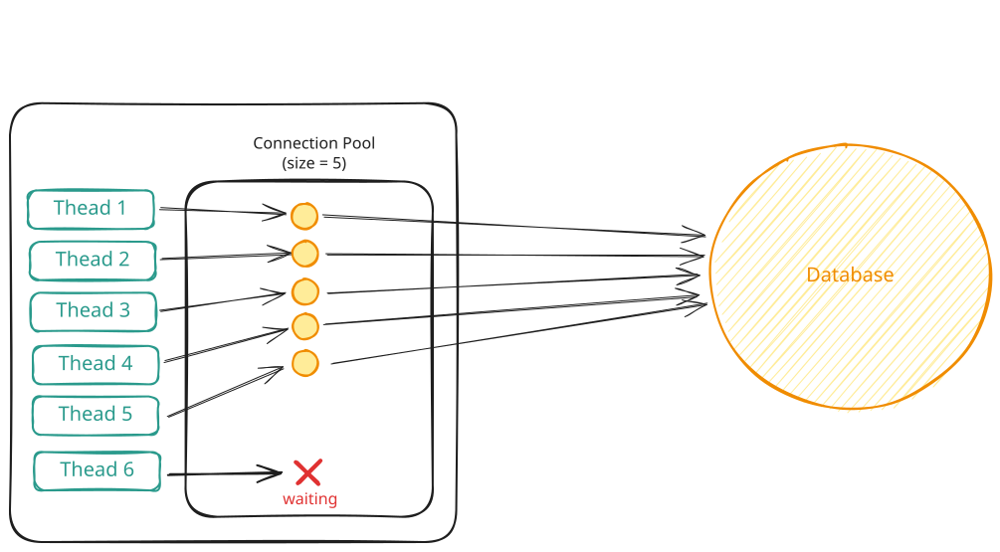
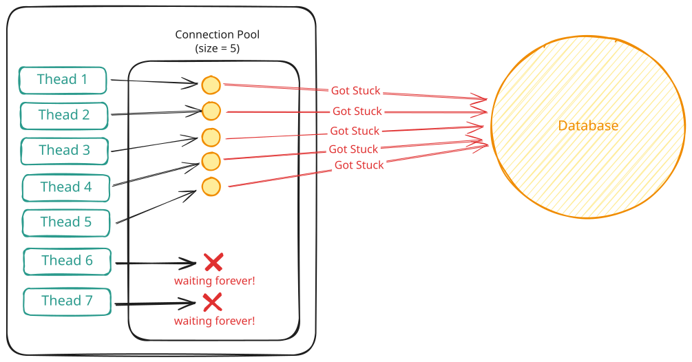
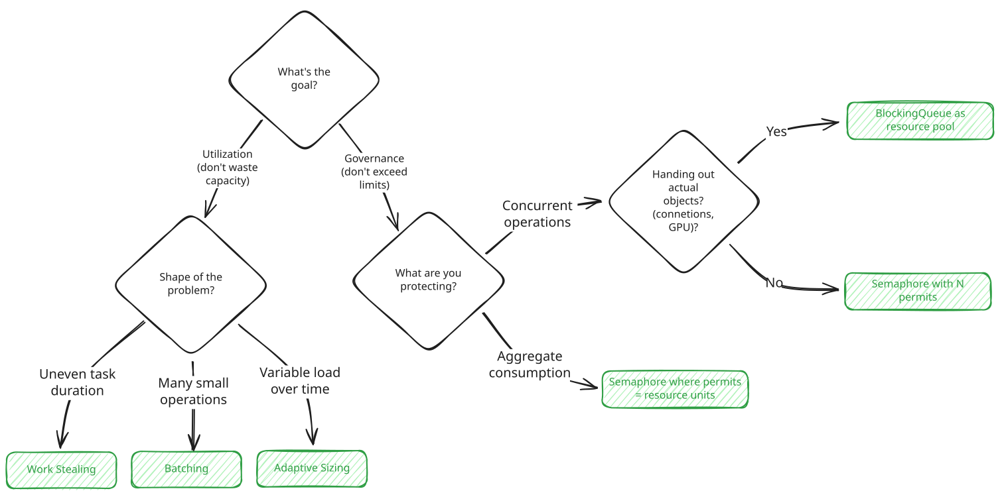

Concurrency
Scarcity
Learn how to manage limited resources in low level design.
⚖️ Scarcity is about managing limited resources when demand exceeds supply. You have finite database connections, limited memory for buffers, or expensive resources that should only be created once. The constraint isn't correctness, it's that there simply aren't enough resources for everyone who wants one.
The Problem
Consider a connection pool that manages connections to a database. Each query to the database needs a connection, and connections are expensive because they consume memory on the database server, hold file descriptors, and take time to establish. So you create a pool of 5 connections at startup and reuse them across requests.
Here's what should happen when a request needs the database, each request getting a connection from the pool and executing a query:

Connection Pool
Five requests can run simultaneously, each using one connection. The sixth request, however, will need to wait until someone returns a connection before it can proceed.
But what happens when a request grabs a connection and never gives it back? This could be due to a bug in the code, or it could be a slow query that takes a long time to complete. But in any case, it will block the connection pool and prevent other requests from getting connections making them wait forever and the service will hang.

Connection Pool Blocked
The database is fine. It's handling five queries without issue. But your service is dead. Every new request blocks indefinitely waiting for a connection that's never coming back. Users see timeouts. Your monitoring shows zero errors because nothing crashed. Requests are just stuck waiting forever.
This is a scarcity problem. What happens when there aren't enough resources for everyone? Unlike correctness problems where the danger is data corruption, here the issue is limited capacity. You have 5 connections and 100 concurrent requests. Most of those requests have to wait. The question is how you manage that waiting without the system falling over.
This article walks through two solutions to scarcity problems:
- Semaphores limit how many threads can hold a resource simultaneously
- Resource pooling gives you actual resource objects, not just permission
Then we cover the four patterns where scarcity appears most often in interviews and how to apply the solutions to them:
- Limit concurrent operations like download managers and API rate limiters
- Limit aggregate consumption like bandwidth limiting and memory budgets
- Reuse expensive objects like connection pools and GPU schedulers
- Maximize utilization like work stealing, batching, and adaptive pool sizing
Solutions
Every scarcity problem comes down to enforcing a capacity limit and deciding what happens when you hit it. You need to track how many resources are in use, block new requests when the limit is reached, and wake waiting threads when resources become available.
Semaphores
A semaphore is a counter that limits how many threads can do something at once. You create it with a permit count, say 5, which is the maximum number of threads that can run concurrently. Threads call acquire before starting work and the semaphore decrements the counter. When they finish, they call release, which increments it back. If the counter hits zero, the next thread trying to acquire blocks until someone releases a permit.
If an interviewer asks "How does this actually block threads?", don't overthink it. You can say "The semaphore uses OS primitives to put threads to sleep when no permits are available, then wakes them when permits are released. I don't need to implement that—Java's Semaphore handles it." Focus on the API, not the internals.
The classic analogy is a nightclub with a capacity limit and I actually find it quite effective when explaining semaphores. The club holds 100 people. The bouncer has 100 tokens. When you want to enter, you need to get a token from the bouncer. If tokens are available, you get one and walk in. When you leave, you return your token to the bouncer, who can now hand it to the next person waiting in line. If all 100 tokens are out when you arrive, you wait. The bouncer doesn't let you in until someone leaves and returns their token.
This makes semaphores perfect for limiting operations where you don't have actual resource objects to manage. Consider an API client making requests to an external service that can handle at most 5 concurrent requests. You don't have "request objects" sitting in a pool. You just need to ensure that no more than 5 requests are in flight at once, regardless of how many threads are trying to make calls.
Here's what it looks like:
api_client.py
Python
import threading
class APIClient:
def __init__(self):
self._semaphore = threading.Semaphore(5)
def make_request(self, endpoint: str):
with self._semaphore:
return self._http_client.get(endpoint)
Python's threading.Semaphore supports the context manager pattern with with, which automatically acquires on entry and releases on exit—even if an exception is thrown. This eliminates the need for explicit try/finally blocks.
Before making a request, acquire a permit. This blocks if 5 requests are already in flight. When the request completes or fails, the finally block releases the permit, waking one waiting thread if any are blocked.
The same pattern works for download managers limiting concurrent downloads, image processors capping parallel transformations, or parking lot systems tracking occupied spots.
In interviews, semaphores are your go-to answer for limiting concurrent operations. "I'll use a semaphore with N permits to ensure at most N operations run simultaneously." It's simple, shows you understand the pattern, and avoids reinventing the wheel.
Challenges
Interviewers love asking "What happens if an exception is thrown?" This is the #1 bug they're testing for. If you write semaphore code without a finally block, they will absolutely call it out. Always show the try-finally pattern immediately to avoid any confusion.
Semaphores work when you need to limit how many operations run concurrently, but they can't help when you need to hand out specific objects. That's when you need resource pooling.
Resource Pooling (with Blocking Queue)
Connection pools have a different problem than simple concurrency limiting. You don't just need to cap how many connections are in use. You need to hand out the actual connection objects themselves. Each connection is a specific object with an open socket, authentication credentials, and transaction state. You can't create new ones on demand because establishing connections is expensive. You need to reuse the same 10 connection objects across all requests.
That's where a blocking queue comes in. When a thread needs a connection, it pulls from the queue. If the queue is empty because all connections are checked out, the thread blocks. When another thread finishes, it returns the connection to the queue, waking one waiting thread.
Here's what it looks like:
connection_pool.py
Python
import queue
class ConnectionPool:
def __init__(self, pool_size: int):
self._pool = queue.Queue(maxsize=pool_size)
for _ in range(pool_size):
self._pool.put(self._create_connection())
def acquire(self):
return self._pool.get() # Blocks if empty
def release(self, conn):
self._pool.put(conn)
def execute_query(self, query: str):
conn = self.acquire()
try:
conn.execute(query)
finally:
self.release(conn)
Python's queue.Queue provides blocking semantics by default. get() blocks until an item is available, and put() adds items. Set maxsize in the constructor to cap the queue size.
When all 10 connections are checked out, the queue is empty. The next thread calling acquire hits take on an empty queue and blocks. It doesn't spin in a loop checking availability. It doesn't sleep and poll periodically. It just blocks efficiently until the OS wakes it when a connection is returned. When another thread calls release and puts a connection back, the queue wakes one blocked thread, hands it the connection, and that thread proceeds.
Interviewers sometimes ask "Why not just use a Semaphore for the connection pool?" Great question! Walk them through it: "A semaphore would let me limit to 10 concurrent operations, but where do the actual Connection objects live? How does a thread get the right one? That's what the queue solves, it stores and dispenses the actual objects."
The finally block is still critical here, just like with semaphores. If executeQuery throws an exception and you forget to release the connection, it's lost forever.
For interview questions about connection pools or thread pools where the scarce resource has state, use a blocking queue. "I'll maintain a BlockingQueue of available connections. Threads call take to acquire one and put to return it. The queue handles blocking and waking automatically." This shows you understand both the resource management and the concurrency coordination.
Challenges
One detail worth mentioning is initialization. The pool creates all connections upfront during construction. This means startup is slow but subsequent requests are fast. An alternative is lazy initialization where you create connections on demand up to the max pool size. This makes startup fast but the first few requests slower. For interviews, upfront initialization is simpler and avoids the lazy initialization race conditions from the synchronization article.
If an interviewer asks "Should we create connections upfront or lazily?", go with upfront unless they specifically say startup time matters. Say: "I'll create all connections in the constructor. It's simpler, avoids race conditions, and ensures predictable performance once the pool is running." Don't overcomplicate it.
Another consideration is connection validation. What if a connection in the pool has gone stale? The database closed it due to inactivity, or the network dropped, or the connection is simply broken. When you hand out a connection, you might want to test it first. If it's dead, discard it, create a new one, and add the new one to the pool. This adds complexity but prevents handing out broken connections.
The biggest pitfall is forgetting that the queue has finite capacity. LinkedBlockingQueue without a size argument is unbounded. If you create connections on demand and never clean them up, the queue grows forever. Always pass a capacity in the constructor. For a pool of 10 connections, the queue capacity is 10. That way the pool can never hold more than 10 connections, whether you create them upfront or lazily.
Common mistake: Writing new LinkedBlockingQueue<>() without a size. This creates an unbounded queue and interviewers will absolutely call it out. Always specify capacity: new LinkedBlockingQueue<>(poolSize).
Another issue is blocking forever on request paths. The take method we used above blocks indefinitely until a connection becomes available. This is dangerous when handling user requests that expect a response within seconds. If all connections are stuck on slow queries, new requests block forever waiting for a connection that might never free up. Users eventually see timeout errors from the load balancer, but your thread is still sitting there blocked.
The solution is to use timeout variants. Instead of take, use poll with a timeout. This waits up to the specified duration and then gives up, returning null to indicate failure.
Here's what a timeout-based connection pool looks like:
connection_pool_with_timeout.py
Python
import queue
class ConnectionPoolWithTimeout:
def __init__(self, pool_size: int, timeout_sec: float):
self._pool = queue.Queue(maxsize=pool_size)
self._timeout = timeout_sec
for _ in range(pool_size):
self._pool.put(self._create_connection())
def acquire(self):
try:
return self._pool.get(timeout=self._timeout)
except queue.Empty:
raise RuntimeError(f"No connection available within {self._timeout}s")
def execute_query(self, query: str):
conn = self.acquire()
try:
conn.execute(query)
finally:
self._pool.put(conn)
Pass timeout=seconds to get(). If the timeout expires, it raises queue.Empty which you can catch and convert to your own exception.
When all connections are in use and a thread requests one, it waits up to the timeout period. If a connection becomes available within that window, the thread gets it and proceeds. If the timeout expires, poll returns null and the code throws an exception. The calling code can catch this and return a 503 Service Unavailable to the user, or retry, or log and fail gracefully. The thread doesn't sit blocked forever consuming resources.
The timeout value is a balancing act. Too short and you fail requests that could have succeeded if they waited another 50ms. Too long and users sit there watching a spinner while you optimistically wait for a connection that's never coming. A decent heuristic is to add some buffer to your expected operation time. Database queries run in 100ms? Set a 500ms timeout. That gives you room for variance while still failing fast when something's broken. For HTTP handlers, stay well under whatever timeout your load balancer or client has configured. Better to return a proper error than let them give up first and leave your thread stuck waiting.
Another consideration is fairness. When multiple threads are blocked waiting for a resource, which one gets it when one becomes available? For most workloads, the wake order is approximately FIFO—threads that waited longer tend to get served first. If you need strict fairness guarantees under high contention, ArrayBlockingQueue accepts a fair=true constructor argument that enforces FIFO ordering for blocked threads, at the cost of reduced throughput. For connection pools, approximate fairness is usually fine.
When the interviewer asks "What if acquiring a resource takes too long?", reach for timeouts. "I'll use poll with a timeout instead of take. If no connection is available within the timeout, I'll throw an exception and return an error to the caller." This shows you understand production concerns beyond just correctness.
Common Problems
Scarcity problems tend to show up in interviews in one of three ways, each directly handled by semaphores or blocking queues:
- Limit concurrent operations (semaphore with N permits)
- Limit aggregate consumption (semaphore with permits = resource units)
- Reuse expensive objects (blocking queue of actual objects)
We'll also cover a fourth pattern—maximizing utilization—which goes beyond governance to keep resources fully busy.
Limit Concurrent Operations
The most common scarcity pattern is when you have operations that can run concurrently, but you need to cap how many run at once. The limit might come from protecting a downstream service, staying within memory bounds, respecting OS limits, or preventing overload. What matters is you don't have actual resource objects to hand out. You just need to ensure at most N operations are active simultaneously.
You recognize this pattern when the interviewer says "limit to N concurrent X." Download manager that caps concurrent downloads to avoid saturating bandwidth. API client that respects rate limits. Image processor that prevents memory exhaustion. The specifics vary but the core is the same: operations can run in parallel, but only N at a time.
Semaphores solve this directly. Let's look at another example:
download_manager.py
Python
import threading
from pathlib import Path
class DownloadManager:
def __init__(self):
self._semaphore = threading.Semaphore(3)
def download(self, url: str, destination: Path):
with self._semaphore:
data = self._http_client.download(url)
destination.write_bytes(data)
Before starting a download, acquire a slot. If 3 downloads are running, the thread blocks until one finishes. The finally block ensures the slot is released when the download completes or fails. This caps concurrent downloads without needing a fixed pool of worker threads.
Examples
This pattern appears whenever you need to cap concurrent operations without managing actual resource objects.
Rate-Limited API Wrapper: You integrate with an external API that allows at most 10 concurrent requests per account. Exceeding this returns errors. You don't have "request objects" to hand out, just a limit. Use a semaphore with 10 permits. Before making a request, acquire a permit. After the request completes (success or failure), release it in a finally block. Threads automatically queue when the limit is hit, preventing you from violating the API's rate limits.
Image Processing Pipeline: Your service resizes uploaded images but you want to limit concurrent processing to 5 operations to avoid CPU saturation. Use a semaphore with 5 permits. Before starting an image transformation, acquire a permit. After completion, release it. This caps concurrent image processing without needing a fixed pool of worker threads. The work happens on whatever thread acquired the permit.
Video Transcoding Service: Your server transcodes uploaded videos but you want at most 3 concurrent transcode operations since each is CPU and memory intensive. Use a semaphore with 3 permits. Before starting a transcode job, acquire a permit. After the job finishes, release it. This prevents resource exhaustion while allowing any thread to perform transcoding work.
Limit Aggregate Consumption
Sometimes the constraint isn't about how many operations are running, but about the total amount of some resource they're collectively consuming. Bandwidth, memory, disk I/O—resources that are measured in units rather than counts. The pattern here is threads competing for a shared budget, where each operation consumes a variable amount.
The key difference from limiting concurrent operations is that operations have different sizes. You're not just tracking "5 uploads in flight." You're tracking "47 MB of bandwidth currently in use across those uploads." A 50 MB upload consumes more of the budget than a 5 MB upload.
The solution is to use a semaphore where each permit represents a unit of the resource. Before consuming resources, acquire permits equal to what you'll use. After completion, release those permits back to the pool. This naturally throttles aggregate consumption without hard-coding which specific operations can proceed.
Consider disk I/O limiting. You want at most 100 MB of data written to disk at once to avoid overwhelming the I/O subsystem. Threads writing files track how much data is in flight. Before writing, they acquire permits equal to their file size. If not enough permits are available, they wait until ongoing writes complete and release permits. This uses a semaphore where each permit represents 1 MB:
disk_writer.py
Python
import threading
from pathlib import Path
class DiskWriter:
MB = 1024 * 1024
def __init__(self):
self._lock = threading.Lock()
self._condition = threading.Condition(self._lock)
self._available = 100 # 100 MB
def write_file(self, data: bytes, path: Path):
permits = max(1, (len(data) + self.MB - 1) // self.MB)
with self._condition:
while self._available < permits:
self._condition.wait()
self._available -= permits
try:
path.write_bytes(data)
finally:
with self._condition:
self._available += permits
self._condition.notify_all()
Each write acquires permits equal to its size, rounded up to the nearest MB. Files smaller than 1 MB still acquire at least one permit to prevent unlimited tiny writes. This permit granularity trades accuracy for simplicity. A 1.1 MB file consumes 2 permits, so you might have 98 MB on disk when you block the next write, not exactly 100 MB. If not enough permits are available, the thread blocks until ongoing writes complete and release permits.
Examples
This pattern appears when operations consume variable amounts of a shared resource budget.
In-Flight Data Limiter: Your service uploads files to S3 but you want to limit how much data is in flight at once to avoid overwhelming memory buffers or network queues. Use a semaphore where each permit represents 1 MB of in-flight capacity. Before uploading a 15 MB file, acquire 15 permits. If only 10 permits are available, the thread blocks until ongoing uploads complete and release permits. After upload completes, release all 15 permits. This caps total in-flight data—small files get through quickly while large files wait for capacity. Note that this limits concurrent bytes, not throughput rate. True rate limiting (e.g., 100 MB/s) requires time-based algorithms like token buckets where permits replenish at a fixed rate.
Memory Budget for Buffers: Each worker thread allocates buffers for processing data, but you want at most 500 MB of buffers across all threads. Use a semaphore with 500 permits (1 permit = 1 MB). Before allocating a 10 MB buffer, acquire 10 permits. The thread blocks if insufficient memory budget remains. When the thread finishes and deallocates its buffer, release 10 permits back. This caps total memory usage while letting threads allocate variable-sized buffers based on their needs.
The distinguishing feature is variable resource consumption per operation. Say: "Operations consume different amounts of bandwidth/memory/I/O. I'll use a semaphore where permits represent resource units—each operation acquires permits equal to what it consumes and releases them when done. This throttles aggregate usage automatically."
Reuse Expensive Objects
Sometimes the scarcity isn't about limiting how many operations run or how much bandwidth they consume. The constraint is that you have a fixed set of expensive objects that are costly to create but can be reused. Database connections take time to establish. GPU contexts consume memory. File handles are limited by the OS. You can't create unlimited instances, and you can't afford to create new ones for every request. You need to share a small pool of objects across many threads.
The key difference from the previous patterns is that you're managing actual stateful objects, not just counting operations or tracking resource units. Each connection has an open socket. Each GPU has loaded model weights. Each file handle points to a specific file descriptor. Threads need the actual object, not permission to do work.
This is exactly the blocking queue pattern we covered earlier—threads take an object from the queue, use it, and return it in a finally block. The queue handles all the blocking and waking automatically.
Examples
This pattern appears when you have expensive, stateful objects that must be shared across threads.
Database Connection Pool: Your service handles 1,000 requests per second but only has 10 database connections. Creating a new connection for every request would overwhelm the database. Use a BlockingQueue holding 10 connection objects. Threads take a connection, execute their query, and return it. If all connections are in use, requests wait. This reuses connections across thousands of requests while capping the load on the database.
GPU Task Scheduler: Your server has 4 GPUs for machine learning inference. Each GPU has 16GB of VRAM with loaded model weights. Creating a new GPU context is expensive. Use a BlockingQueue holding 4 GPU references. Inference requests take a GPU, run their model, and return it. If all GPUs are busy, requests queue. This maximizes GPU utilization without oversubscribing hardware.
The distinguishing feature is expensive object creation. When creating the resource is slow, uses significant memory, or is limited by the OS, use a blocking queue to pool and reuse instances. Say: "Creating connections is expensive, so I'll maintain a BlockingQueue of connection objects. Threads take one, use it, and return it in a finally block."
Maximizing Utilization
Everything so far has focused on governance, not exceeding limits. But some interviews, particularly at infrastructure companies, trading firms, and AI labs, care about the opposite problem: given limited resources, how do you keep them maximally busy?
A basic connection pool hands out connections on demand and waits for them to return. But what if some requests hold connections much longer than others? Fast queries finish in 1ms while a slow analytics query ties up a connection for 500ms. The pool might report "10 connections in use" while actual database throughput is minimal, i.e. 9 of those connections are idle, waiting on application code to do something with the results.
There are three main techniques to address this.
Work stealing handles uneven task distribution. Instead of a single queue feeding all workers, each worker maintains its own queue. When a worker's queue empties, it steals tasks from another worker's queue. This keeps all workers busy even when task durations vary wildly. Java's ForkJoinPool and Go's scheduler both use work stealing internally. The pattern matters when you have many short tasks mixed with occasional long ones—without stealing, one worker gets stuck on a long task while others sit idle.
Batching amortizes coordination overhead. If you're making 1000 small database writes, acquiring and releasing a connection 1000 times wastes cycles on pool management. Instead, batch writes together—acquire one connection, write 100 rows, release. The pool sees fewer acquisitions, each doing more useful work. Batching trades latency for throughput: individual items wait to be grouped, but total work per second goes up. This is why database drivers support batch inserts and why message queues often flush in batches rather than per-message.
Adaptive sizing adjusts pool capacity based on demand. A fixed pool of 10 connections might be too small during peak traffic and wasteful during quiet periods. Adaptive pools grow when utilization is high and shrink when connections sit idle. HikariCP for Java and pgbouncer for Postgres both support this. The complexity is tuning—grow too aggressively and you overwhelm the database during spikes, shrink too quickly and you pay connection setup costs repeatedly.
For most interviews, governance (semaphores, bounded pools) is what they're testing. But if the interviewer pushes on throughput or asks "how would you keep the GPUs fully utilized?", pivot to these techniques: "To maximize utilization with variable task lengths, I'd use per-worker queues with work stealing. For many small operations, I'd batch them to reduce pool overhead."
Conclusion
Scarcity is about managing limited resources. You have N threads and M resources where M is less than N. Some threads must wait, and the question is how you coordinate that waiting without the system falling over.
Scarcity problems follow predictable patterns. Once you recognize the shape, picking the right solution becomes straightforward.
When you spot scarcity in an interview, run through this decision tree:

Scarcity Decision Tree
The implementation becomes mechanical once you recognize the pattern. The hard part in interviews isn't writing the code, it's seeing that "design a download manager" is really just "limit concurrent operations with a semaphore" and "build an image processing service with memory limits" is "throttle resource usage with permits representing MB."
When coding these systems, ask yourself what happens at the edges. If threads block forever waiting for resources, add timeouts with poll(timeout) or tryAcquire(timeout) and fail gracefully. If the same threads always lose out, ensure fairness with FIFO ordering. If contention kills throughput, consider partitioning resources across tenants or priorities.
The bugs are predictable too. Forgetting to release in a finally block leaks permits forever. Creating unbounded queues leads to OOM errors. Blocking indefinitely on request paths causes user-visible timeouts. Check-then-act without locks lets threads exceed limits. Know these failure modes and you'll catch them in code reviews and interviews alike.
Test Your Knowledge
Answer the question below to find your gaps.
Question 1 of 15
In a connection pool built on a blocking queue, what happens when a thread tries to take a connection but the queue is empty?
1
It gets null back and proceeds without a connection
2
The pool automatically creates a brand-new connection on the spot
3
The thread blocks (is parked) until another thread returns a connection
4
It throws an exception immediately